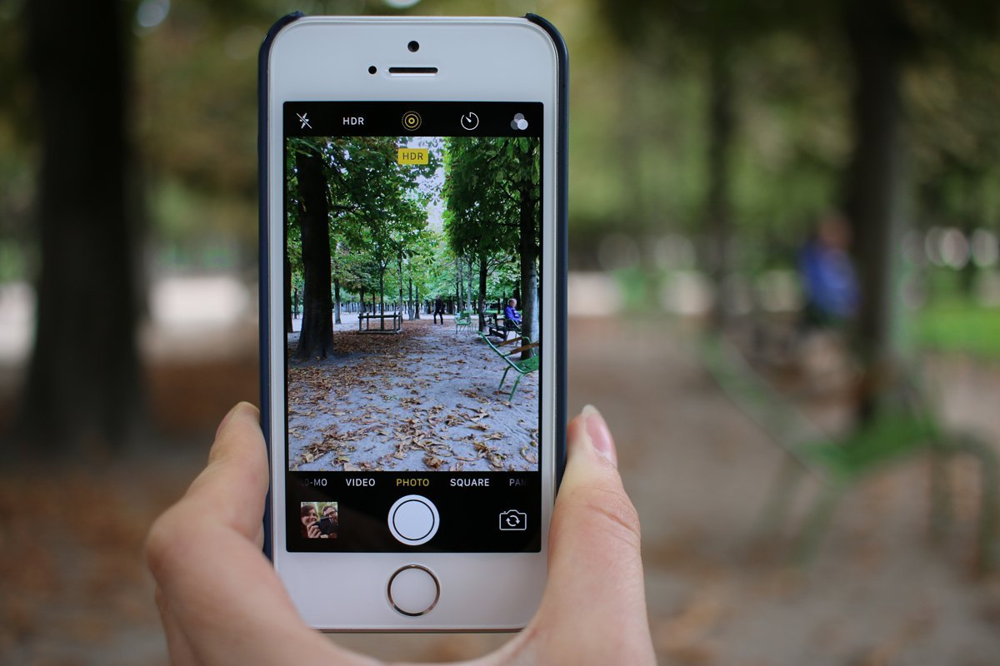

Pernah memotret momen yang bagus, lalu sadar ada orang asing lewat di belakang atau kabel listrik merusak pemandangan? Dulu, menghapus gangguan semacam itu butuh aplikasi edit foto berbayar atau kemampuan memakai Photoshop. Google sebenarnya sudah punya jawabannya sejak 2021 lewat Magic Eraser, tapi fitur ini lama terasa seperti barang mewah: awalnya hanya untuk HP Pixel, lalu hanya untuk pelanggan Google One yang berlangganan.
Kabar baiknya, per November 2026, Magic Eraser dan sederet alat edit berbasis AI di Google Foto sudah gratis untuk semua pengguna. Kamu tidak perlu membeli HP Pixel dan tidak perlu membayar langganan apa pun.
Artikel ini merangkum apa saja yang gratis, cara memakainya langkah demi langkah, dan batasan yang perlu kamu ketahui supaya tidak kaget di tengah jalan.

Dulu Eksklusif, Sekarang Gratis untuk Semua
Magic Eraser pertama kali diperkenalkan bersama Pixel 6 pada 2021 sebagai fitur eksklusif HP Pixel. Banyak orang mengira fitur ini butuh HP Pixel, tapi Google kemudian membukanya untuk HP lain dengan syarat: pengguna HP non Pixel harus berlangganan Google One. Di titik inilah Magic Eraser terlanjur dicap sebagai fitur berbayar.
Cap itu kedaluwarsa pada 10 April 2024, ketika Google mengumumkan lewat blog resminya bahwa alat edit AI Google Foto akan dibuka untuk semua pengguna mulai 15 Mei 2024, tanpa langganan. Alat yang dimaksud mencakup Magic Eraser untuk menghapus objek pengganggu, Photo Unblur untuk mempertajam foto yang buram, dan Portrait Light untuk memperbaiki pencahayaan foto potret. Pengumuman itu juga memperluas Magic Editor, alat edit generatif yang awalnya hanya ada di Pixel 8 dan Pixel 8 Pro, ke semua perangkat Pixel. Untuk pengguna Android dan iPhone pada umumnya, Google memberi jatah 10 kali penyimpanan Magic Editor per bulan secara gratis. Jadi kalau kamu selama ini mengira fitur hapus objek ala AI itu cuma milik pengguna Pixel atau pelanggan berbayar, anggapan itu sudah tidak berlaku lagi.
Cara Menghapus Objek Foto Pakai Magic Eraser
Yang kamu butuhkan hanya aplikasi Google Foto dan akun Google. Di sebagian besar HP Android aplikasi ini sudah terpasang bawaan, sementara pengguna iPhone bisa mengunduhnya gratis dari App Store. Berikut langkahnya:
- Buka aplikasi Google Foto, lalu masuk dengan akun Google kamu bila belum.
- Pilih foto yang ingin diedit dari galeri.
- Ketuk tombol Edit di bilah bawah layar.
- Pilih menu Tools, lalu pilih Magic Eraser.
- Ketuk objek yang ingin dihapus, atau lingkari dan usap areanya dengan jari. Google Foto biasanya otomatis mendeteksi objek yang bisa dihapus dan menandainya untukmu.
- Ketuk tombol Erase, lalu tunggu beberapa detik sampai AI mengisi area bekas objek dengan latar yang diperkirakan cocok.
- Ketuk tanda centang untuk menyimpan hasilnya, atau ketuk undo bila hasilnya kurang rapi dan kamu ingin mencoba lagi.
Contoh yang paling sering berhasil: orang asing yang lewat di latar foto liburan, kabel listrik yang melintang di foto langit, kendaraan yang tidak sengaja tertangkap kamera, atau noda kecil yang mengganggu komposisi. Bila menu Magic Eraser belum muncul, pastikan aplikasi Google Foto sudah diperbarui ke versi terbaru, karena Google meluncurkan fitur ini bertahap ke perangkat yang memenuhi syarat minimum.
Foto: Japanexperterna.se, lisensi CC BY-SA 2.0
Yang Masih Dibatasi: Jatah Magic Editor 10 Kali Sebulan
Bagian ini penting supaya ekspektasimu pas. Magic Eraser, Photo Unblur, dan Portrait Light bisa dipakai bebas tanpa langganan. Yang punya jatah adalah Magic Editor, alat yang lebih canggih karena memakai AI generatif untuk hal seperti memindahkan posisi subjek foto atau mengganti langit yang mendung jadi biru. Pengguna Android dan iPhone non Pixel mendapat 10 kali penyimpanan Magic Editor per bulan. Bila jatah itu habis, kamu perlu menunggu bulan berikutnya, memakai perangkat Pixel, atau berlangganan paket Premium Google One 2TB ke atas.
Praktiknya, untuk kebutuhan sehari hari seperti menghapus fotobom atau membersihkan latar foto, Magic Eraser saja sudah lebih dari cukup dan tidak memakan jatah Magic Editor. Simpan Magic Editor untuk edit yang benar benar butuh, misalnya memperbaiki foto penting yang komposisinya berantakan.
Tips Supaya Hasil Hapusan Terlihat Rapi
Magic Eraser bekerja paling baik bila area yang dihapus punya latar yang sederhana. Mulailah berlatih dengan foto berlatar langit, dinding polos, atau jalan yang sepi sebelum mencoba foto yang ramai. Untuk objek kecil, cubit layar untuk memperbesar dulu supaya lingkaran seleksimu presisi dan tidak ikut menghapus bagian foto yang ingin dipertahankan. Bila objeknya besar, hapus secara bertahap dalam beberapa sapuan kecil daripada sekaligus, hasilnya biasanya lebih halus. Terakhir, jangan ragu memakai undo dan mengulang dari sudut seleksi yang berbeda, karena percobaan ulang tidak mengurangi jatah apa pun.
Penutup
Magic Eraser adalah contoh fitur yang citranya masih tertinggal dari kenyataannya: banyak yang mengira ini fitur premium Pixel atau butuh langganan Google One, padahal sejak Mei 2024 Google menggratiskan alat edit AI Google Foto untuk semua pengguna. Selama HP kamu memenuhi syarat minimum dan aplikasi sudah terbaru, kamu bisa menghapus objek pengganggu di foto langsung dari HP tanpa aplikasi tambahan dan tanpa membayar. Selamat bersih bersih galeri.
Sumber dan Info Resmi
Angka dan detail di artikel ini merujuk ke sumber berikut, yang sudah diverifikasi isinya:
- Blog Google: pengumuman 10 April 2024 bahwa Magic Eraser, Photo Unblur, dan Portrait Light gratis untuk semua pengguna Google Foto mulai 15 Mei 2024; Magic Editor jatah 10 simpan per bulan untuk Android dan iOS, selebihnya butuh Pixel atau Google One Premium 2TB ke atas; peluncuran bertahap.
- How-To Geek: riwayat Magic Eraser, eksklusif Pixel 6 (2021), lalu khusus pelanggan Google One di HP non Pixel, kini gratis untuk semua; langkah pakai (Edit, Tools, Magic Eraser, lingkari area, Erase, simpan); cukup aplikasi Google Foto dan akun Google.
- Eraspace: langkah pakai Magic Eraser dalam Bahasa Indonesia dan contoh objek yang bisa dihapus: orang lewat, kabel listrik berantakan, kendaraan tertangkap kamera.